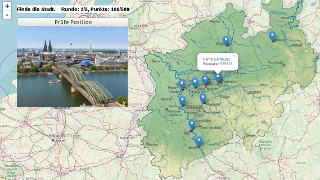
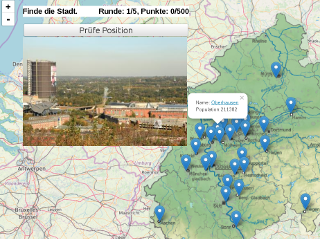
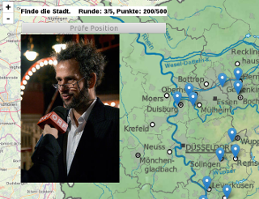

 Anfänger Quiz: Stadtfoto (Städte > 300.000 Einwohner)
 Mittlerschweres Quiz: Stadtfoto (Städte > 100.000 Einwohner)
 Schweres Quiz: berühmte Personen/Institutionen/Gebäude usw. (Städte > 100.000 Einwohner)